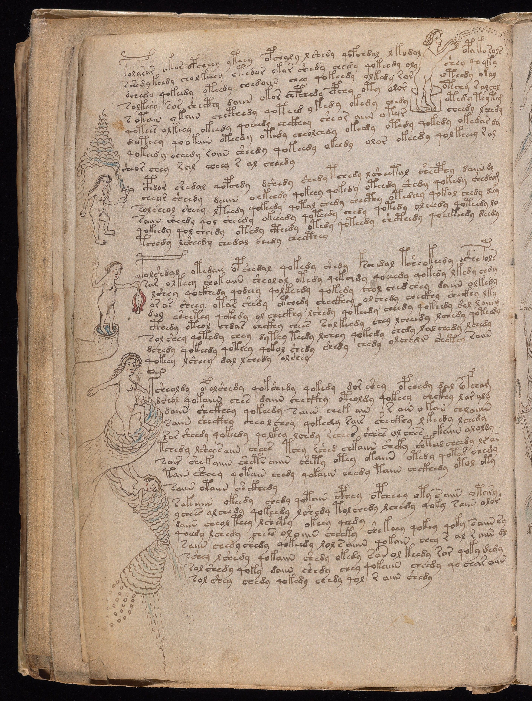

Explorador Interactivo de Corpus y Traducción en Tiempo Real
Explora el manuscrito línea por línea con las cadenas normalizadas oficiales del corpus de referencia, incluyendo el Folio 77r completo para pruebas fuera de muestra.

Folio 77r (Biológica - Túbulos Parte 1 / Out-of-Sample Test)
Estudio morfológico de conductos biológicos internos y líneas de validación cruzada.
Ver Colección Oficial en Yale ↗Flujo IVTFF de Referencia (EVA)
Cargando flujo de texto...
Salida Decodificada en Tiempo Real
Procesando vectores matriciales...